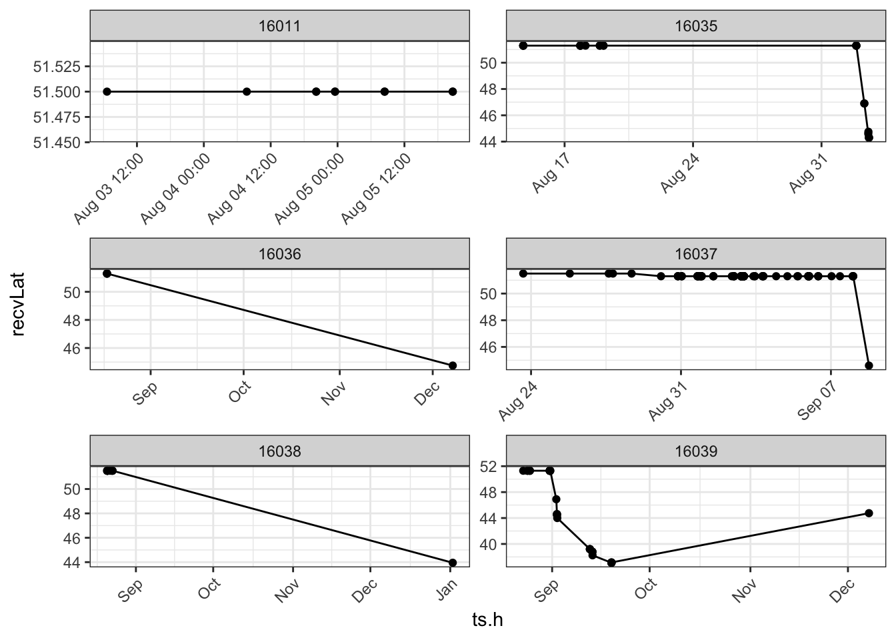
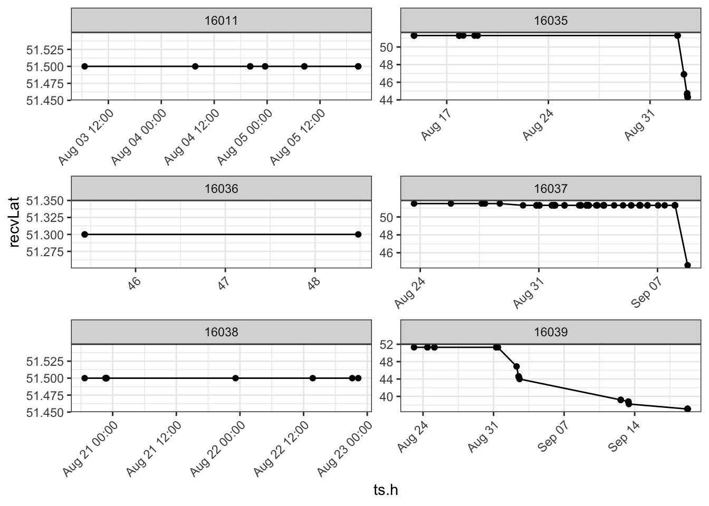
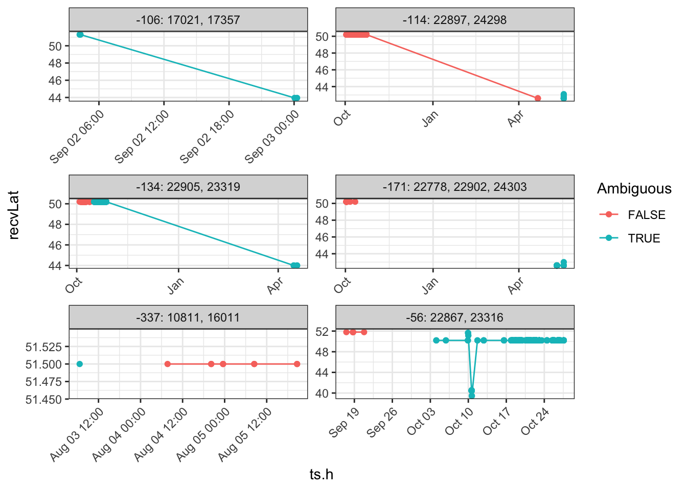
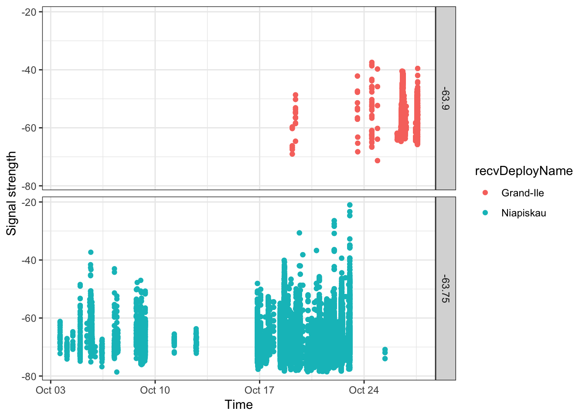
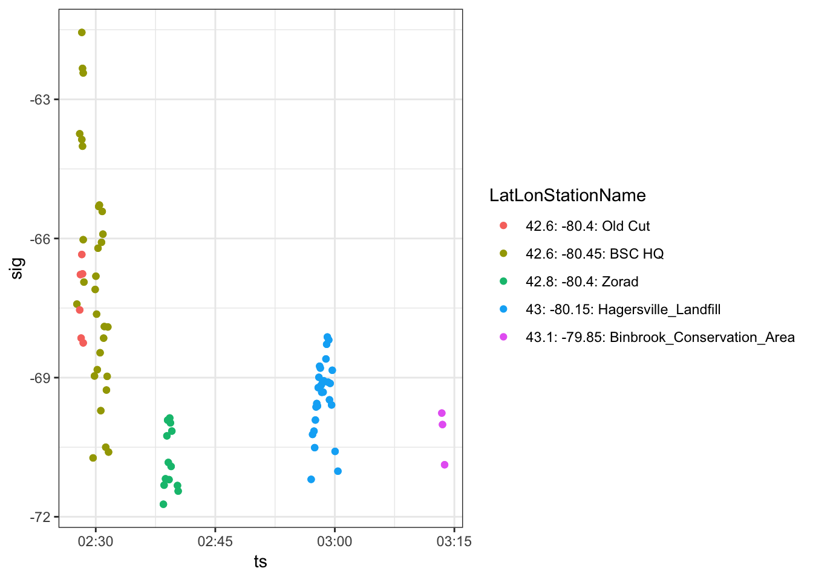
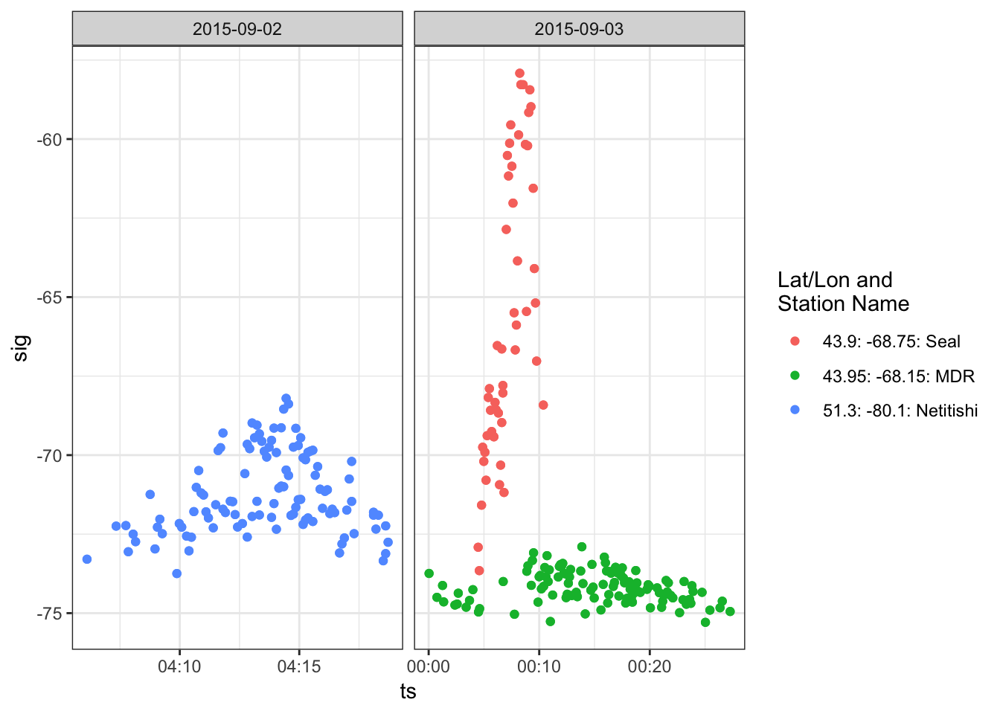
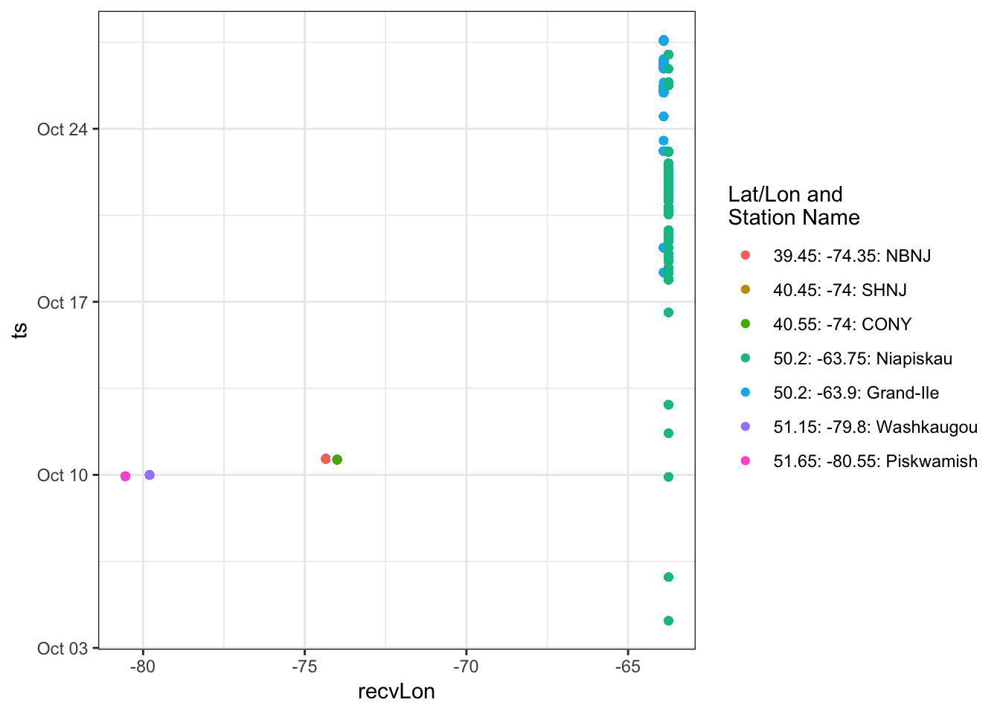

Chapter 5 Nettoyage des données
Il peut arriver que des données de détection d’émetteurs dans votre base soient incorrectes; les «erreurs» peuvent avoir trois causes.
Premièrement, les récepteurs peuvent détecter du bruit radioélectrique aléatoire (des parasites) qu’ils interprètent comme étant de véritables signaux provenant d’émetteurs. Le phénomène produit ce qu’on appelle des faux positifs.
Deuxièmement, même si nous faisons tout pour l’éviter, il arrive parfois que des émetteurs en double émettent des signaux en même temps. Lorsque sont déployés en même temps deux émetteurs ayant le même identifiant, la même cadence d’émission et la même fréquence d’émission nominale, il se peut que les signaux captés proviennent de l’un ou de l’autre des émetteurs. Si cela se produit, il faut s’appuyer sur l’information contextuelle pour les départager (si possible). Les signaux en question sont appelés signaux d’émetteurs ambigus.
Troisièmement, il peut arriver que deux émetteurs diffusent chacun un signal en même temps et, ce faisant, produisent par hasard un signal semblant provenir d’un troisième émetteur, qui est en fait inexistant. Cette situation survient la plupart du temps à des sites de repos d’oiseaux ou dans des colonies de nidification, où de nombreux émetteurs fonctionnent simultanément. Dans ces cas, on qualifie ces émetteurs de faux. Il n’est pas expressément question des faux émetteurs dans le présent chapitre; nous cherchons une façon de les détecter de manière globale et d’éliminer les données qui s’y rapportent. Il en est question ici parce que vous pourriez rencontrer des situations où des données de détection semblent très plausibles sans pourtant avoir de sens sur le plan biologique. Communiquez avec nous si vous croyez qu’il existe des données de détection de signaux de faux émetteurs dans votre base.
Le présent chapitre a pour but de vous fournir les outils dont vous avez besoin pour trouver les détections erronées dans vos données et les éliminer. Nous vous donnons ci-après des exemples de flux de travail permettant de traiter les faux positifs et les signaux d’émetteurs ambigus:
Utiliser un filtre préliminaire pour supprimer toutes les détections faisant partie d’une séquence d’au moins 2. Une séquence est un groupe de détections consécutives des signaux d’un émetteur par une antenne et un récepteur donnés. En général, le risque est élevé qu’une séquence d’au moins 2 détections (c.-à-d. 2 salves d’impulsions) représente un faux positif. Nous recommandons généralement d’éliminer toutes les détections faisant partie d’une séquence d’au moins 2, sauf si celles-ci ont eu lieu à l’une de quelques stations «tranquilles» où il y a peu de bruit radioélectrique. Toutefois, comme il est probable que cette opération entraîne la perte de détections non erronées, nous recommandons également qu’après avoir effectué une analyse complète de vos données, vous réexaminiez les détections en cause une à une pour déterminer (habituellement selon le contexte) si elles peuvent être considérées comme acceptables.
Déterminer combien de vos détections d’émetteurs peuvent être des détections de signaux ambigus.
Fournir un flux de travail pour examiner les détections individuellement et déterminer si elles font partie d’une séquence d’au moins 2 et si elles correspondent à des erreurs.
Éliminer les erreurs dans vos données.
5.1 Chargement des logiciels requis
Suivez les instructions dans le chapitre 2 pour installer les logiciels suivants avant de charger les données, si cela n’est pas déjà fait.
Sys.setenv(tz = "GMT")
# library(devtools)
library(motus)
library(tidyverse)
library(lubridate)
# library(rworldmap) # pour la production de cartes5.2 Chargement des données de détection
Il est indiqué au chapitre 3 que pour accéder à la base de données du projet 176 (données du Programme de suivi des oiseaux de rivage de la baie James), il faut entrer «motus.sample» dans la console R comme nom d’utilisateur et mot de passe à l’invite de la fonction tagme() du processus d’authentification de l’utilisateur. Nous tenons pour acquis que vous avez déjà effectué le téléchargement initial de ces données.
En accédant à la table alltags, nous supprimons certaines variables non nécessaires pour réduire la taille globale de l’ensemble de données et rendre son utilisation plus facile. C’est particulièrement important dans le cas des projets de grande envergure et complexes; la section 3.7 présente la marche à suivre pour visualiser les variables dans une table et pour filtrer les données et en faire des sous-ensembles avant de les réunir dans une trame de données. Nous créons ensuite les variables de latitude et de longitude des récepteurs («recvLat», «recvLon», «recvAlt») en nous basant sur les coordonnées enregistrées par leur GPS («gpsLat», «gpsLon», «gpdAlt»). Lorsque ces coordonnées ne sont pas disponibles, il faut utiliser celles qui sont contenues dans les métadonnées sur les récepteurs déployés («recvDeployLat», «recvDeployLon», «recvDeployAlt»). Nous utilisons les instructions «collect()» et «as.data.frame()» pour transformer la trame de données en un fichier «plat» puis nous transformons toutes les variables temporelles exprimées en secondes depuis le 1er janvier 1970 dans le format de type datetime (POSIXct). Enfin, nous créons des noms de récepteurs («receiver names») à partir des variables de latitude et de longitude propres aux récepteurs dans la base de données pour lesquels les valeurs de ces variables ne sont pas inscrites.
proj.num <- 176
# Charger les données de détection, choisir les variables, créer des variables de latitude et transformer
# la trame de données en un fichier plat. De plus, nous intervenons pour les sites dont les données sur les récepteurs déployés
# sont manquantes ou dont les récepteurs n'ont pas de nom. Quand plus d'utilisateurs auront examiné (et corrigé!) leurs métadonnées,
# il devrait commencer à y avoir moins de données manquantes.
sql.motus <- tagme(proj.num, update = TRUE, dir = "./data/")
tbl.alltags <- tbl(sql.motus, "alltags")
df.alltags <- tbl.alltags %>%
mutate(recvLat = if_else((is.na(gpsLat)|gpsLat == 0),
recvDeployLat, gpsLat),
recvLon = if_else((is.na(gpsLon)|gpsLon == 0),
recvDeployLon, gpsLon),
recvAlt = if_else(is.na(gpsAlt), recvDeployAlt, gpsAlt)) %>%
select(-noise, -slop, -burstSlop, -done, -bootnum, -mfgID,
-codeSet, -mfg, -nomFreq, -markerNumber, -markerType,
-tagDeployComments, -fullID, -deviceID, -recvDeployLat,
-recvDeployLon, -recvDeployAlt, -speciesGroup, -gpsLat,
-gpsLon, - recvAlt, - recvSiteName) %>%
collect() %>%
as.data.frame() %>%
mutate(ts = as_datetime(ts), # Travailler avec les dates APRÈS avoir transformé la trame de données en un fichier plat.
tagDeployStart = as_datetime(tagDeployStart),
tagDeployEnd = as_datetime(tagDeployEnd),
recvLat = plyr::round_any(recvLat, 0.05),
recvLon = plyr::round_any(recvLon, 0.05),
recvDeployName = if_else(is.na(recvDeployName),
paste(recvLat, recvLon, sep=":"),
recvDeployName))
# Notez que dans l'instruction «select», vous pouvez simplement choisir les variables dont vous avez besoin,
# par exemple select(runID, ts, sig, freqsd, motusTagID, ambigID, runLen, tagProjID,
# tagDeployStart, tagDeployEnd, etc.)5.3 Vérifications préliminaires des données
Avant de filtrer les données, il faut produire quelques sommaires et graphiques de données.
5.3.1 Sommaires de données de détection d’émetteurs
Premièrement, déterminez quels émetteurs ont été détectés et combien sont caractérisés par une séquence d’au moins 2 détections. Il y a plusieurs raisons pour lesquelles il se peut que des émetteurs déployés ne soient pas détectés:
L’émetteur n’a pas été activé correctement au moment du déploiement. Pour éviter cela, il faut toujours s’assurer que l’émetteur est activé en utilisant un récepteur portatif pour vérifier l’émission avant de fixer l’émetteur sur l’animal et de remettre celui-ci en liberté.
Il se peut qu’un animal portant un émetteur activé correctement ne soit pas passé dans la zone de détection d’une station réceptrice. La conception des études comprenant l’installation des récepteurs à des endroits stratégiques en fonction des objectifs du projet peut augmenter la probabilité de détection des émetteurs.
S’il y a des métadonnées sur les émetteurs déployés qui sont manquantes ou incorrectes dans la base de données Motus, il se peut que l’algorithme de traitement des données ne «voie» pas les émetteurs en question au moment où ils ont été déployés, ou à quelque moment que ce soit. Il faut s’assurer que les métadonnées sur les émetteurs sont entrées correctement.
Avant de poursuivre, vérifiez si vous avez des émetteurs qui ont été déployés plus d’une fois, tel que décrit dans la section 4.3.4. Si c’est le cas, vous devrez utiliser «tagDeployID» ou une combinaison de «motusTagID» et de «tagDeployID» pour distinguer les détections propres à chaque déploiement (l’un ou l’autre des identifiants d’émetteurs peut faire l’affaire, mais en les combinant, vous saurez quel identifiant est associé à chaque déploiement).
Dans le projet 176, tous les émetteurs ont été déployés seulement une fois chacun. Nous utiliserons donc «motusTagID» comme identifiant unique pour un émetteur déployé dans tout le code R tout au long du présent guide.
L’opération suivante montre que 18 émetteurs déployés dans le cadre du projet 176 ont été détectés et que beaucoup sont caractérisés par une séquence d’au moins 2 détections (TRUE):
df.alltags %>%
filter(tagProjID == proj.num) %>% # sous-ensemble devant inclure seulement les émetteurs enregistrés dans le cadre du projet
mutate(rl.gt.2 = runLen == 2) %>%
group_by(motusTagID, rl.gt.2) %>%
tally() %>%
spread(key = rl.gt.2, value=n)## # A tibble: 18 x 3
## # Groups: motusTagID [18]
## motusTagID `FALSE` `TRUE`
## * <int> <int> <int>
## 1 16011 125 2
## 2 16035 454 2
## 3 16036 106 12
## 4 16037 1307 46
## 5 16038 84 78
## 6 16039 1098 28
## 7 16044 289 16
## 8 16047 773 66
## 9 16048 84 14
## 10 16052 133 26
## 11 17357 277 12
## 12 19129 568 720
## 13 22867 5545 222
## 14 22897 34308 488
## 15 22902 2815 108
## 16 22905 25684 326
## 17 23316 5518 216
## 18 23319 22471 288Dans certains cas, il peut s’agir de détections valides, mais nous jugeons qu’il est plus simple de les retirer de l’analyse, pour y revenir éventuellement. Nous filtrons donc en fonction d’une séquence de détections (runLen) supérieure à 2 pour la plupart des opérations subséquentes. Enregistrons les données filtrées dans un bloc pour l’ajouter à nos autres filtres plus tard.
df.alltags.sub <- filter(df.alltags, runLen > 2)
df.block.0 <- filter(df.alltags, runLen == 2) %>% select(motusTagID,
runID) %>% distinct()La meilleure façon d’obtenir une première représentation des données consiste à les pointer sous forme de graphiques. Nous vous montrerons plus tard comment pointer les données de détection sur une carte, mais nous préférons adopter d’abord une approche plus simple, soit le pointage selon la latitude et la longitude. Toutefois, il faut d’abord simplifier les données. Autrement, nous risquerions de tenter de répartir des milliers ou des millions de points, ce qui peut prendre beaucoup de temps. Nous simplifierons les données en créant une petite fonction qui nous servira de nouveau à de futures étapes.
Notez qu’il faut enlever environ 150 détections qu’il est impossible de localiser parce qu’il n’y a aucune référence géographique associée aux métadonnées sur les récepteurs qui ont capté les signaux. Faites une simple vérification pour déterminer si les récepteurs en cause vous appartiennent; dans l’affirmative, vous devez corriger les métadonnées en ligne!
filter(df.alltags.sub, is.na(recvLat)) %>% select(recvLat,
recvLon, recvDeployName, recvDeployID, recv, recvProjID,
recvProjName) %>% distinct()## recvLat recvLon recvDeployName recvDeployID recv recvProjID
## 1 NA NA NP mobile 3813 Lotek-280 176
## 2 NA NA NA:NA NA SG-1415BBBK0382 NA
## 3 NA NA NA:NA NA SG-2814BBBK0547 NA
## recvProjName
## 1 SampleData
## 2 <NA>
## 3 <NA>Simplification des données en vue du pointage
# Simplifiez les données en produisant un sommaire en fonction du runID.
# Si vous voulez produire un sommaire à une échelle plus fine ou plus grossière, vous pouvez aussi créer d'autres groupes.
# L'option de rechange la plus simple est une variable d'estampille temporelle arrondie; par exemple en utilisant
# l'appel de fonction mutate(ts.h = plyr::round_any(ts, 3600).
# Une autre option consiste à utiliser juste la date (p. ex. date = as_date(ts)).
#
fun.getpath <- function(df)
{
df %>%
filter(tagProjID == proj.num, # Conservez seulement les émetteurs enregistrés dans le cadre du projet 176.
!is.na(recvLat) | !(recvLat == 0)) %>% # Rejette les données sans indication de longitude/latitude
group_by(motusTagID, runID, recvDeployName, ambigID,
tagDeployLon, tagDeployLat, recvLat, recvLon) %>%
# Production d'un sommaire par runID pour obtenir la séquence de détections maximale et la référence (estampille) temporelle moyenne:
summarize(max.runLen = max(runLen), ts.h = mean(ts)) %>%
arrange(motusTagID, ts.h)
} # Fin de l'appel de fonction
df.alltags.path <- fun.getpath(df.alltags.sub)Nous commencerions par localiser un sous-ensemble d’émetteurs en fonction de la latitude ou de la longitude afin d’avoir un aperçu des problèmes possibles. Ici, pour simplifier l’exemple, nous pointons la position de seulement six émetteurs. Pour l’instant, nous évitons d’examiner les émetteurs ambigus.
p <- ggplot(data = filter(df.alltags.path, motusTagID %in%
c(16011, 16035, 16036, 16037, 16038, 16039)), aes(ts.h,
recvLat))
p + geom_point() + geom_path() + theme_bw() + facet_wrap(~motusTagID,
scales = "free", ncol = 2) + theme(axis.text.x = element_text(angle = 45,
vjust = 1, hjust = 1))
Nous voyons tout de suite qu’il pourrait y avoir un problème, car la position indiquée de certains émetteurs est à environ 44 degrés de latitude en hiver, ce qui est possible mais non probable dans le cas des oiseaux visés par le Programme de suivi des oiseaux de rivage de la baie James (projet 176). Examinons ces émetteurs de plus près en vérifiant les séquences de détections dans la trame de données qui sont associées aux détections effectuées en décembre et en janvier.
filter(df.alltags.sub, month(ts) %in% c(12, 1), motusTagID %in%
c(16036, 16038, 16039)) %>% group_by(recvDeployName,
month(ts), runLen) %>% summarize(n = length(ts),
n.tags = length(unique(motusTagID)))## # A tibble: 2 x 5
## # Groups: recvDeployName, month(ts) [?]
## recvDeployName `month(ts)` runLen n n.tags
## <chr> <dbl> <int> <int> <int>
## 1 Sable West Light 2 1.00 3 3 1
## 2 Swallowtail 12.0 3 6 2Ces détections correspondent à des positions dans les Provinces maritimes du Canada (l’île de Sable, en Nouvelle-Écosse, et l’île Grand Manan, au Nouveau-Brunswick) et sont caractérisées par des séquences de 3 détections. Elles indiquent la présence probable de faux positifs. Commençons un compte des séquences précises en cause afin de les réunir pour effectuer un filtrage plus tard.
Si cela vous intéresse, vous pouvez exécuter de nouveau le code ci-dessus, mais avec la trame de données complète (df.alltags) contenant des séquences d’au moins 2 détections. Vous constaterez qu’il existe à ces positions d’autres détections de faux positifs qui sont déjà éliminées par filtrage en fonction d’une séquence d’au moins 2 détections (runLen > 2). Ces détections supplémentaires montrent une nouvelle fois qu’il y avait du bruit radioélectrique à ces positions pendant ces mois précis (décembre et janvier), ce qui a causé certaines détections de faux positifs.
Vous pourriez aussi être intéressés d’une manière plus générale à déterminer quelles données sont caractérisées seulement par de courtes séquences de détections. Par exemple, le code suivant indique la séquence de détections maximale à tous les sites par mois (pour les séquences d’au moins 2 détections [runLen > 2]).
df.alltags.sub %>% mutate(month = month(ts)) %>% group_by(recvDeployName,
month) %>% summarize(max.rl = max(runLen)) %>%
spread(key = month, value = max.rl)## # A tibble: 49 x 9
## # Groups: recvDeployName [49]
## recvDeployName `1` `3` `4` `5` `8` `9` `10` `12`
## * <chr> <dbl> <dbl> <dbl> <dbl> <dbl> <dbl> <dbl> <dbl>
## 1 Assateague State Park NA NA NA NA NA 6.00 NA NA
## 2 BennettMeadow NA NA NA NA NA NA 11.0 NA
## 3 Binbrook_Conservation_… NA NA NA 3.00 NA NA NA NA
## 4 BISE NA NA NA NA NA NA 6.00 NA
## 5 Bombay Hook NA NA NA NA NA 53.0 NA NA
## 6 Brier2 NA NA NA NA NA 29.0 NA NA
## 7 BSC HQ NA NA NA 21.0 NA NA NA NA
## 8 BULL NA NA NA NA NA 38.0 5.00 NA
## 9 Comeau (Marshalltown) NA NA NA NA NA 4.00 NA NA
## 10 CONY NA NA NA NA NA NA 7.00 NA
## # ... with 39 more rowsVous pouvez aussi produire une liste des sites où la séquence de détections maximale ne dépasse jamais 4 (par exemple), ce qui peut parfois (mais pas toujours!) indiquer qu’il s’agit simplement de faux positifs.
df.alltags.sub %>% mutate(month = month(ts)) %>% group_by(recvDeployName,
month) %>% summarize(max.rl = max(runLen)) %>%
filter(max.rl < 5) %>% spread(key = month, value = max.rl)## # A tibble: 12 x 8
## # Groups: recvDeployName [12]
## recvDeployName `1` `3` `4` `5` `9` `10` `12`
## * <chr> <dbl> <dbl> <dbl> <dbl> <dbl> <dbl> <dbl>
## 1 Binbrook_Conservation_Area NA NA NA 3.00 NA NA NA
## 2 Comeau (Marshalltown) NA NA NA NA 4.00 NA NA
## 3 Koffler NA NA 3.00 NA NA NA NA
## 4 LLICALDAD NA 4.00 NA NA NA NA NA
## 5 MountToby NA NA NA NA NA 3.00 NA
## 6 NP mobile NA NA NA NA 3.00 NA NA
## 7 Old Cut NA NA 4.00 NA NA NA NA
## 8 OSCT NA NA NA NA NA 3.00 NA
## 9 Quempillen (Chile) NA 3.00 NA NA NA NA NA
## 10 Sable West Light 2 3.00 NA NA NA NA NA NA
## 11 Swallowtail NA NA NA NA NA NA 3.00
## 12 TRUS NA NA NA NA NA 4.00 NAIl est impossible de passer en revue ici tous les problèmes possibles. Nous vous encourageons fortement à explorer vos données minutieusement avant de prendre des décisions éclairées quant à savoir quelles détections sont improbables ou indéterminées. Dans le reste du présent chapitre, nous vous montrerons comment recueillir l’information sur les séquences de détections et les appliquer à vos données avant l’analyse.
Pour commencer, créons une trame de données contenant les motusTagID et les runID correspondant aux faux positifs indiqués précédemment.
Ensuite, produisons de nouveau le graphique avec les données nouvellement filtrées.
# Créez le filtre.
df.block.1 <- filter(df.alltags.sub, month(ts) %in%
c(12, 1), motusTagID %in% c(16036, 16038, 16039)) %>%
select(motusTagID, runID) %>% distinct()
# Utilisez la fonction que nous avons créée
# précédemment pour produire une nouvelle trame de
# données «path» en vue de créer le graphique.
df.alltags.path <- fun.getpath(filter(df.alltags.sub,
motusTagID %in% c(16011, 16035, 16036, 16037, 16038,
16039), !(runID %in% df.block.1$runID)))
p <- ggplot(data = df.alltags.path, aes(ts.h, recvLat))
p + geom_point() + geom_path() + theme_bw() + facet_wrap(~motusTagID,
scales = "free", ncol = 2) + theme(axis.text.x = element_text(angle = 45,
vjust = 1, hjust = 1))
Nous pouvons voir que la majorité des détections qui restent semblent maintenant avoir plus de sens. Les émetteurs 16035, 16037 et 16039 ont été détectés pendant la migration dans ce qui semble être une progression latitudinale raisonnable dans le temps, et les trois autres émetteurs n’ont pas été détectés très loin du lieu de leur déploiement.
Nous vous encourageons à explorer le reste des émetteurs dans ce groupe pour déterminer s’il y a d’autres faux positifs.
5.4 Recherche et examen de détections ambiguës
Avant d’aller plus loin, nous devons vérifier s’il y a des détections ambiguës d’émetteurs. S’il y en a, nous devons les examiner et créer d’autres filtres pour les éliminer de notre base de données.
Est-ce que vous avez des émetteurs associés à des détections ambiguës?
La fonction «clarify()» du logiciel R motusClient permet de produire un sommaire des ambiguïtés dans les données de détection. Chaque ambigID se rapporte à une sélection de détections qui pourraient correspondre à au moins un motusTagID (jusqu’à concurrence de 6), lesquels sont indiqués dans les champs id1 à id6:
clarify(sql.motus)## ambigID numHits id1 fullID1 id2
## 1 -56 5734 22867 SampleData#272.1:5.3@166.38(M.22867) 23316
## 2 -106 279 17021 Selva#172:6.1@166.38(M.17021) 17357
## 3 -114 86 22897 SampleData#303.1:5.3@166.38(M.22897) 24298
## 4 -134 22749 22905 SampleData#301:5.3@166.38(M.22905) 23319
## 5 -171 2074 22778 RBrownAMWO#308:5.3@166.38(M.22778) 22902
## 6 -337 4 10811 Niles#152:6.1@166.38(M.10811) 16011
## fullID2 id3
## 1 SampleData#272:5.3@166.38(M.23316) NA
## 2 SampleData#172:6.1@166.38(M.17357) NA
## 3 NEONICS#303:5.3@166.38(M.24298) NA
## 4 SampleData#301.1:5.3@166.38(M.23319) NA
## 5 SampleData#308.1:5.3@166.38(M.22902) 24303
## 6 SampleData#152:6.1@166.38(M.16011) NA
## fullID3 id4 fullID4 id5 fullID5 id6 fullID6
## 1 <NA> NA <NA> NA <NA> NA <NA>
## 2 <NA> NA <NA> NA <NA> NA <NA>
## 3 <NA> NA <NA> NA <NA> NA <NA>
## 4 <NA> NA <NA> NA <NA> NA <NA>
## 5 NEONICS#308:5.3@166.38(M.24303) NA <NA> NA <NA> NA <NA>
## 6 <NA> NA <NA> NA <NA> NA <NA>
## motusTagID tsStart tsEnd
## 1 NA NA NA
## 2 NA NA NA
## 3 NA NA NA
## 4 NA NA NA
## 5 NA NA NA
## 6 NA NA NANous pouvons voir qu’il y a dans cet ensemble de données six émetteurs associés à des détections ambiguës. Les détections associées à cinq des six «ambigID» pourraient correspondre à un de deux émetteurs et celles associées à un «ambigID» (-171), à un de trois émetteurs. Les champs «fullID» indiquent les noms des projets associés aux émetteurs en double (p. ex., «SampleData», «Selva» et «Niles»), ainsi que les caractéristiques des émetteurs (identifiant du fabricant, cadence d’émission et fréquence d’émission).
Obtenons un vecteur et produisons des graphiques pour voir où il pourrait y avoir des problèmes.
df.ambigTags <- select(df.alltags.sub, ambigID, motusTagID) %>%
filter(!is.na(ambigID)) %>% distinct()En utilisant notre fonction «getpath», nous créerons des trajectoires et nous pointerons les détections sur des graphiques. Nous ajouterons de l’information dans les graphiques pour indiquer où (dans le temps) les émetteurs sont effectivement ambigus. Nous pourrons alors inspecter l’ensemble (ou des parties) de chaque graphique pour déterminer si nous pouvons attribuer sans ambiguïté selon le contexte la détection d’un émetteur ambigu à un déploiement particulier.
df.alltags.path <- fun.getpath(filter(df.alltags.sub,
motusTagID %in% df.ambigTags$motusTagID, tagProjID ==
proj.num)) %>% # Créez une variable booléenne pour les détections
# ambiguës:
mutate(Ambiguous = !(is.na(ambigID)))
# Pour pointer tous les émetteurs ambigus se
# rapportant à un même projet ensemble sur le même
# graphique, nous devons créer une nouvelle
# variable «ambig tag» que nous appelons «newID»
ambigTags.2 <- filter(df.alltags.sub) %>% select(ambigID,
motusTagID) %>% filter(!is.na(ambigID)) %>% distinct() %>%
group_by(ambigID) %>% summarize(newID = paste(unique(ambigID),
toString(motusTagID), sep = ": ")) %>% left_join(df.ambigTags,
by = "ambigID")
# et la fusionner avec «df.alltags.path».
df.alltags.path <- left_join(df.alltags.path, ambigTags.2,
by = "motusTagID") %>% arrange(ts.h)
p <- ggplot(data = df.alltags.path, aes(ts.h, recvLat,
group = Ambiguous, colour = Ambiguous))
p + geom_point() + geom_path() + theme_bw() + facet_wrap(~newID,
scales = "free", ncol = 2) + theme(axis.text.x = element_text(angle = 45,
vjust = 1, hjust = 1))
Occupons-nous d’abord des cas faciles.
ambigID -337: motusTagID 10811 et 16011
filter(df.alltags.sub, ambigID == -337) %>% group_by(motusTagID,
tagDeployStart, tagDeployEnd, tagDeployLat, tagDeployLon) %>%
tally()## # A tibble: 2 x 6
## # Groups: motusTagID, tagDeployStart, tagDeployEnd, tagDeployLat [?]
## motusTagID tagDeployStart tagDeployEnd tagDeployLat
## <int> <dttm> <dttm> <dbl>
## 1 10811 2014-10-28 07:00:00 2015-08-03 07:00:00 39.1
## 2 16011 2015-08-02 11:39:59 2015-12-17 11:39:59 51.5
## # ... with 2 more variables: tagDeployLon <dbl>, n <int>Le graphique montre que l’émetteur ambigu -337 est ambigu seulement au début du déploiement.
En examinant le sommaire des données sur les déploiements des émetteurs, nous constatons qu’il y avait seulement 4 détections, à la latitude exacte du déploiement de l’émetteur 16011 et juste avant les détections non ambiguës du motusTagID 16011. Dès lors, le problème ici est seulement que la queue de la trajectoire de déploiement de l’émetteur 10811 chevauche légèrement la trajectoire de déploiement de l’émetteur 16011. Nous pouvons affirmer en toute confiance que ces détections sont reliées au motusTagID 16011 et supprimer les détections ambiguës attribuées à l’autre émetteur.
Nous créerons une autre trame de données pour assurer le suivi de ces séquences de détections.
# Nous voulons trouver les détections associées au
# motusTagID que nous souhaitons ultimement
# SUPPRIMER de la trame de données.
df.block.2 <- filter(df.alltags.sub, ambigID == -337,
motusTagID == 10811) %>% select(motusTagID, runID) %>%
distinct()ambigID -134: motusTagIDs 22905 et 23319
filter(df.alltags.sub, ambigID == -134) %>% group_by(motusTagID,
tagDeployStart, tagDeployEnd, tagDeployLat, tagDeployLon,
month(ts)) %>% tally()## # A tibble: 4 x 7
## # Groups: motusTagID, tagDeployStart, tagDeployEnd, tagDeployLat,
## # tagDeployLon [?]
## motusTagID tagDeployStart tagDeployEnd tagDeployLat
## <int> <dttm> <dttm> <dbl>
## 1 22905 2016-10-01 16:00:00 2017-06-12 16:00:00 50.2
## 2 22905 2016-10-01 16:00:00 2017-06-12 16:00:00 50.2
## 3 23319 2016-10-15 16:00:00 2017-06-26 16:00:00 50.2
## 4 23319 2016-10-15 16:00:00 2017-06-26 16:00:00 50.2
## # ... with 3 more variables: tagDeployLon <dbl>, `month(ts)` <dbl>,
## # n <int>Ici, la situation est semblable à la précédente, mais un peu plus complexe. Deux émetteurs identiques ont été déployés peu de temps l’un après l’autre au même endroit. Examinons un graphique simple.
filter(df.alltags.sub, motusTagID %in% c(22905, 23319),
month(ts) == 10) %>% ggplot(aes(ts, sig, group = recvDeployName,
colour = recvDeployName)) + geom_point() + theme_bw() +
xlab("Time") + ylab("Signal strength") + facet_grid(recvLon ~
.)
Il semble que les détections à deux sites proches l’un de l’autre se chevauchent. De l’information supplémentaire fournie par les chercheurs sur le terrain pourrait nous permettre de dénouer l’intrigue, mais à la seule vue des données la situation n’est pas claire.
Nous examinons également les détections non ambiguës de l’émetteur -134 effectuées à la mi-avril. Comme c’est très tôt pour qu’un Bécasseau maubèche passe au-dessus du sud de l’Ontario, il y a lieu de s’interroger sur ces détections.
L’utilisation du filtre suivant révèle l’existence de deux séquences distinctes de 3 détections séparées par un intervalle de 3 jours. Si nous inspectons le reste de ce lot (c.-à-d. si nous examinons aussi les séquences d’au moins 2 détections dans la trame de données originale) …
filter(df.alltags, batchID == 79646) %>% select(runLen,
recvDeployName) %>% group_by(runLen, recvDeployName) %>%
tally()## # A tibble: 2 x 3
## # Groups: runLen [?]
## runLen recvDeployName n
## <int> <chr> <int>
## 1 2 Koffler 110
## 2 3 Koffler 12… nous constatons qu’il y a beaucoup de faux positifs à cette tour à peu près au même moment (dans le même lot), de sorte que les séquences de 3 détections sont vraisemblablement de faux positifs. Nous supprimerons donc de la base de données toutes les détections de cet émetteur ambigu.
# Nous voulons trouver les détections associées au
# motusTagID que nous souhaitons ultimement
# SUPPRIMER de la trame de données.
df.block.3 <- filter(df.alltags.sub, ambigID == -134) %>%
select(motusTagID, runID) %>% distinct()ambigID -171: motusTagIDs 22778, 22902 et 22403
Les détections ambiguës reliées à cet émetteur, effectuées dans la région des Grands Lacs, pourraient aussi être reliées au motusTagID 22778 enregistré dans le cadre du projet RBrownAMWO ou au motusTagID 24303 enregistré dans le cadre du projet Neonics. Examinons ces détections de plus près.
Premièrement, trouvez la date et le lieu du déploiement de chaque émetteur.
filter(df.alltags, ambigID == -171) %>% filter(!is.na(tagDeployStart)) %>%
select(motusTagID, tagProjID, start = tagDeployStart,
end = tagDeployEnd, lat = tagDeployLat, lon = tagDeployLon,
species = speciesEN) %>% distinct() %>% arrange(start)## motusTagID tagProjID start end lat
## 1 22902 176 2016-10-01 16:00:00 2017-06-12 16:00:00 50.19278
## 2 22778 82 2016-10-21 00:00:00 2018-09-09 00:00:00 45.13535
## 3 24303 146 2017-05-10 22:30:59 2017-06-30 22:30:59 42.60600
## lon species
## 1 -63.74528 Red Knot
## 2 -67.29323 American Woodcock
## 3 -80.46900 White-crowned SparrowEt pointez sur des graphiques les détections ambiguës.
df.ambig.171 <- filter(df.alltags.sub, ambigID == -171)
p <- ggplot(data = df.ambig.171, aes(ts, sig, colour = as.factor(port)))
p + geom_point() + geom_smooth(method = "loess", se = FALSE) +
theme_bw() + facet_wrap(as_date(ts) ~ recvDeployName,
scales = "free_x") + theme(axis.text.x = element_text(angle = 45,
vjust = 1, hjust = 1))Nous voyons qu’il y a un grand nombre de détections ambiguës le 10 mai 2017 à Old Cut (Long Point, lac Érié, Ontario), ce qui s’expliquerait par la présence d’un oiseau qui «flâne» dans les environs. Il s’agit presque certainement de détections des signaux de l’émetteur 24303, qui a été déployé à Old Cut le 10 mai 2017. Les détections ultérieures ont été effectuées le 18 mai près d’Old Cut (siège d’Études d’Oiseaux Canada, Port Rowan, Ontario) puis au nord d’Old Cut (Hagersville, Ontario). Ces détections correspondent au départ en migration d’un oiseau. Notez en particulier les courbes dans les graphiques du centre et de droite qui correspondent à une hausse puis une baisse de la puissance du signal, ce qui indiquerait qu’un oiseau passe en volant dans le faisceau d’une antenne.
Comme ces détections sont reliées à un autre projet, nous supprimons simplement toutes les détections de cet émetteur ambigu de notre base de données.
# Nous voulons trouver les détections associées au
# motusTagID que nous souhaitons ultimement
# SUPPRIMER de la trame de données.
df.block.4 <- filter(df.alltags.sub, ambigID == -171) %>%
select(motusTagID, runID) %>% distinct()ambigID -114: motusTagIDs 22897 et 24298
Examinons maintenant les ambiguïtés se rapportant à l’émetteur -114.
filter(df.alltags, ambigID == -114) %>% filter(!is.na(tagDeployStart)) %>%
select(motusTagID, tagProjID, start = tagDeployStart,
end = tagDeployEnd, lat = tagDeployLat, lon = tagDeployLon,
species = speciesEN) %>% distinct() %>% arrange(start)## motusTagID tagProjID start end lat
## 1 22897 176 2016-10-01 16:00:00 2017-06-12 16:00:00 50.19278
## 2 24298 146 2017-05-10 03:00:00 2017-06-30 03:00:00 42.60690
## lon species
## 1 -63.74528 Red Knot
## 2 -80.46900 White-crowned SparrowIci encore, nous formons un sous-ensemble de données que nous pointons sur un graphique. Comme un premier graphique semble indiquer que toutes les détections se rapportent à un vol migratoire, nous produisons un graphique quelque peu différent du précédent qui illustre mieux cette situation.
df.ambig.114 <- filter(df.alltags.sub, ambigID == -114) %>%
mutate(LatLonStationName = paste(recvLat, recvLon,
recvDeployName, sep = ": "))
p <- ggplot(data = df.ambig.114, aes(ts, sig, colour = LatLonStationName))
p + geom_point() + theme_bw()
Notez que les détections correspondent à un départ en migration à partir du secteur de Long Point (station d’Old Cut, lac Érié, Ontario) environ une semaine après le déploiement de l’émetteur ambigu 24298 au même endroit. Dans ce cas aussi, il semble que les détections ambiguës peuvent être supprimées de la base de données car elles sont reliées à un autre projet.
df.block.5 <- filter(df.alltags.sub, ambigID == -114) %>%
select(motusTagID, runID) %>% distinct()ambigID -106: motusTagIDs 17021 et 17357
Ces deux émetteurs posent un problème intéressant. Il y a seulement une courte période de chevauchement, entre la mi-août et la mi-septembre 2015. Un des émetteurs a été fixé sur une Grive à joues grises en Colombie et l’autre sur un Bécasseau à croupion blanc, qui était associé au projet 176 (Programme de suivi des oiseaux de rivage de la baie James).
filter(df.alltags, ambigID == -106) %>% filter(!is.na(tagDeployStart)) %>%
select(motusTagID, tagProjID, start = tagDeployStart,
end = tagDeployEnd, lat = tagDeployLat, lon = tagDeployLon,
species = speciesEN) %>% distinct() %>% arrange(start)## motusTagID tagProjID start end lat
## 1 17021 57 2015-04-30 05:00:00 2015-09-14 05:00:00 11.12265
## 2 17357 176 2015-08-11 07:20:00 2015-12-26 07:20:00 51.48390
## lon species
## 1 -74.08735 Gray-cheeked Thrush
## 2 -80.45000 White-rumped SandpiperNous pointons les détections ambiguës sur des graphiques pour examiner la période de chevauchement.
df.ambig.106 <- filter(df.alltags.sub, ambigID == -106)
p <- ggplot(data = df.ambig.106, aes(ts, sig, colour = paste(recvLat,
recvLon, recvDeployName, sep = ": ")))
p + geom_point() + scale_colour_discrete(name = "Lat/Lon and\nStation Name") +
theme_bw() + facet_wrap(~as_date(ts), scales = "free_x")
Les séquences de détections sont longues dans les deux ensembles, qui semblent valides (hausse puis baisse de la puissance du signal). Les deux ensembles de détections sont séparés d’environ une journée; il se peut donc qu’ils correspondent à deux oiseaux différents ou encore au vol de départ du Bécasseau à croupion blanc depuis sa halte migratoire. Utilisons la fonction siteTrans (dans le logiciel motus; voir la section C.13) pour examiner le vol entre Netitishi et MDR/Seal (dans le golfe du Maine).
df.ambig.106 %>% filter(motusTagID == 17021) %>% # Choisissez seulement l'identifiant d'un des deux émetteurs ambigus.
siteTrans(latCoord = "recvLat", lonCoord = "recvLon") %>%
ungroup() %>%
filter(rate < 60) %>% # Supprimez les détections simultanées des signaux provenant de Seal et de MDR.
mutate(total.time = as.numeric(round(seconds_to_period(tot_ts)))) %>%
select(start=recvDeployName.x, end=recvDeployName.y, date=ts.x, "rate(m/s)" = rate,
dist, total.time = total.time, bearing)## # A tibble: 1 x 7
## start end date `rate(m/s)` dist total.time bearing
## <chr> <chr> <dttm> <dbl> <dbl> <dbl> <dbl>
## 1 Netiti… MDR_4… 2015-09-02 04:18:42 17.1 1.21e⁶ 70879 128Ces détections sont à plus de 1200 km l’une de l’autre, mais la vitesse du vol (17 m/s) correspond à celle d’un Bécasseau à croupion blanc. Étant donné que la durée de vie prévue de l’émetteur porté par la Grive à joues grises était proche de sa fin, nous pouvons raisonnablement affirmer que ces détections sont reliées au projet 176 et supprimer les détections ambiguës associées au motusTagID 17021.
df.block.6 <- filter(df.alltags.sub, ambigID == -106,
motusTagID == 17021) %>% select(motusTagID, runID) %>%
distinct()ambigID -56: motusTagIDs 22867 et 23316
Ces deux émetteurs ont aussi été déployés dans le cadre du même projet.
filter(df.alltags, ambigID == -56) %>% filter(!is.na(tagDeployStart)) %>%
select(motusTagID, tagProjID, start = tagDeployStart,
end = tagDeployEnd, lat = tagDeployLat, lon = tagDeployLon,
species = speciesEN) %>% distinct() %>% arrange(start)## motusTagID tagProjID start end lat
## 1 22867 176 2016-09-06 15:35:00 2017-05-18 15:35:00 51.79861
## 2 23316 176 2016-10-02 16:00:00 2017-06-13 16:00:00 50.19278
## lon species
## 1 -80.69139 Pectoral Sandpiper
## 2 -63.74528 Red KnotL’émetteur 23316 a été déployé dans le cadre du Programme de suivi des oiseaux de rivage de la baie James (projet 176) environ trois semaines après l’émetteur 22867, dont le lieu de déploiement se trouvait loin à l’ouest.
df.ambig.56 <- filter(df.alltags.sub, ambigID == -56) %>%
mutate(sig = ifelse(sig > 0, sig * -1, sig))
p <- ggplot(data = df.ambig.56, aes(recvLon, ts, colour = paste(recvLat,
recvLon, recvDeployName, sep = ": ")))
p + geom_point() + theme_bw() + scale_colour_discrete(name = "Lat/Lon and\nStation Name") Nous voyons sur le graphique qu’un émetteur est détecté constamment près de la longitude -65, près du lieu de déploiement de l’émetteur 23316. Après la date du début du déploiement, cet émetteur était également présent à -65 pendant et après les détections effectuées loin à l’ouest. Selon toute probabilité, toutes les détections effectuées à -65 se rapportent à l’émetteur 23316. Toutefois, il est également clair que l’explication de l’ambiguïté se trouve dans la période du 9 au 11 octobre, de sorte que nous devons nous concentrer sur cette partie de l’ensemble de données.
ts.begin <- ymd_hms("2016-10-06 00:00:00")
ts.end <- ymd_hms("2016-10-12 23:00:00")
p <- ggplot(data = filter(df.ambig.56, ts > ts.begin,
ts < ts.end), aes(ts, recvLon, colour = paste(recvLat,
recvLon, recvDeployName, sep = ": ")))
p + geom_point() + theme_bw() + scale_colour_discrete(name = "Lat/Lon and\nStation Name")Nous pouvons constater que l’émetteur ambigu a été détecté constamment à Niapiskau et Grand Île avant et après la période durant laquelle il a aussi été détecté au nord et à l’ouest (à Washkaugou et à Piskwamish) et ensuite au sud (NBNJ, SHNJ et CONY). Nous pouvons examiner cette transition en filtrant la portion des détections non proches de Niapiskau et de nouveau en utilisant la fonction siteTrans du logiciel motus.
# L’autre émetteur est un double.
df.56.tmp <- filter(df.ambig.56, !(recvLat == 50.2), motusTagID == 22867)
siteTrans(df.56.tmp, latCoord = "recvLat", lonCoord = "recvLon") %>%
ungroup() %>%
filter(rate < 60) %>% # get rid of simultaneous detections
mutate(total.time = as.numeric(round(seconds_to_period(tot_ts)))) %>%
select(start=recvDeployName.x,
end=recvDeployName.y,
date=ts.x, "rate(m/s)" = rate,
dist, total.time = total.time, bearing)## # A tibble: 2 x 7
## start end date `rate(m/s)` dist total.time bearing
## <chr> <chr> <dttm> <dbl> <dbl> <dbl> <dbl>
## 1 Piskwa… Washk… 2016-10-09 22:49:59 20.3 7.63e⁴ 3767 137
## 2 Washka… SHNJ_… 2016-10-10 00:00:42 24.3 1.27e⁶ 52386 157Le Bécasseau maubèche a effectué un vol de 14,5 heures entre Washkaugou et SHNJ à la vitesse de 24 m/s, ce qui est plausible. Les chercheurs engagés dans le projet peuvent avoir d’autres données pour soutenir ou réfuter l’hypothèse (par exemple, l’observation de l’individu encore présent à Niapiskau après que le vol a été enregistré), mais il semble probable que, tandis qu’un émetteur est demeuré à différents points aux environs de la longitude -65, un autre émetteur porté par un individu qui a effectué les vols migratoires susmentionnés a été détecté. Nous pouvons produire un autre graphique plus détaillé de la puissance du signal pour examiner de plus près ces vols migratoires potentiels:
df.56.tmp <- filter(df.alltags.sub, ambigID == -56,
recvLon < -70)
p <- ggplot(data = df.56.tmp, aes(ts, sig, colour = paste(recvLat,
recvLon, recvDeployName, sep = ": ")))
p + geom_point() + theme_bw() + scale_colour_discrete(name = "Lat/Lon and\nStation Name") +
facet_wrap(~as_date(ts), scales = "free_x")Le graphique présente les profils typiques de passages en vol correspondant à la hausse puis à la baisse de la puissance du signal. Cela, ajouté aux profils de détection généraux et aux connaissances sur l’espèce, nous mène à croire que les détections ambiguës peuvent être raisonnablement divisées entre deux individus, l’un détecté en continu aux environs de la longitude -65 (émetteur 23316) et l’autre en migration vers le sud-ouest pendant la même période (émetteur 22867).
Pour résoudre le problème, nous devons créer deux filtres, l’un qui exclut les détections ambiguës de l’émetteur 22867 et l’autre qui exclut certaines détections de l’émetteur 23316. Dans le cas présent, l’approche la plus facile consiste à filtrer en fonction du motusTagID et du recvDeployName.
# L’émetteur 23316 était seulement à «Grande Île»
# et à «Niapiskau» et l’émetteur 22867 n’a jamais
# été détecté à ces deux endroits. Nous excluons
# donc toutes les détections non effectuées à
# «Grande Île» et à «Niapiskau» pour motusTag 23316
# et nous faisons l’inverse pour l’émetteur 22867.
df.block.7 <- filter(df.alltags.sub, ambigID == -56,
motusTagID == 23316, !(recvDeployName %in% c("Grand-Ile",
"Niapiskau"))) %>% select(motusTagID, runID) %>%
distinct()
df.block.8 <- filter(df.alltags.sub, ambigID == -56,
motusTagID == 22867, recvDeployName %in% c("Grand-Ile",
"Niapiskau")) %>% select(motusTagID, runID) %>%
distinct()5.5 Vérification de la validité des séquences d’au moins 2 détections
Au début du présent chapitre, nous avons supprimé toutes les détections faisant partie d’une séquence d’au moins 2, car on considère comme très probable qu’elles correspondent à de faux positifs. Maintenant que nous avons nettoyé les données et que nous avons un bon niveau de confiance quant aux détections qu’il reste, vous pourriez décider de revenir en arrière et d’examiner de plus près ces détections faisant partie d’une séquence d’au moins 2. Vous pourriez le faire, par exemple, en réexécutant les différents graphiques décrits dans ce chapitre (en commençant par les graphiques des coordonnées géographiques [latitude et longitude] en fonction du temps) pour voir si certaines de ces détections peuvent être considérées comme acceptables dans le contexte des positions correspondant aux détections acceptées. Il revient à l’utilisateur de déterminer quelles détections sont raisonnables en fonction de la biologie et du comportement de chaque animal portant un émetteur.
5.6 Filtrage des données
5.6.1 Filtrer et enregistrer le résultat dans le format RDS
Pour filtrer les données, nous pouvons simplement joindre de nouveau les trames de données df.block aux données originales en utilisant une fonction left_join() puis les éliminer des données:
# Combinez les trames de données df.block en une
# seule et ajoutez une probabilité de 0 pour les
# enregistrements filtrés.
df.block.all <- bind_rows(df.block.0, df.block.1, df.block.2,
df.block.3, df.block.4, df.block.5, df.block.6,
df.block.7, df.block.8) %>% mutate(probability = 0)
df.alltags.sub <- left_join(df.alltags, df.block.all,
by = c("runID", "motusTagID")) %>% # Attribuez une probabilité de 1 aux
# enregistrements qui ne seront pas filtrés.
mutate(probability = ifelse(is.na(probability), 1,
probability)) %>% filter(probability > 0)Maintenant, enregistrons la trame de données locale sous la forme d’un fichier RDS, que nous utiliserons dans le prochain chapitre. Comme il a été mentionné dans la section 3.8, le format RDS conserve la structure des données R, y compris les estampilles temporelles. Le format RDS présente également l’avantage que les sorties d’un flux de travail déterminé sont enregistrées sous la forme d’un fichier plat, auquel on peut accéder de nouveau au moyen d’une simple instruction readRDS.
saveRDS(df.alltags.sub, file = "./data/dfAlltagsSub.rds")Et pour lire les données de nouveau:
df.alltags.sub <- readRDS("./data/dfAlltagsSub.rds")5.6.2 Enregistrer un filtre personnalisé dans la base de données motus et l’appliquer aux données
Comme options de rechange à l’enregistrement des données sous la forme d’un fichier dans le format RDS, le logiciel R Motus intègre des fonctionnalités vous permettant d’enregistrer vos filtres directement dans votre fichier .motus. Une fois que vous aurez enregistré les filtres dans votre base de données, vous pouvez utiliser la fonction left_join() tel qu’indiqué précédemment sans avoir à recourir à des trames de données ou à un fichier RDS pour stocker vos données. Pour obtenir de plus amples renseignements sur les fonctions permettant de travailler avec des filtres Motus, reportez-vous à l’annexe D.
# Combinez les trames de données df.block en une
# seule et ajoutez une probabilité de 0 pour les
# enregistrements filtrés.
df.block.all <- bind_rows(df.block.0, df.block.1, df.block.2,
df.block.3, df.block.4, df.block.5, df.block.6,
df.block.7, df.block.8) %>% mutate(probability = 0)
# Créez un nouveau filtre appelé filtAmbigFalsePos
# et intégrez-y les données de la trame
# df.block.all.
tbl.filter = writeRunsFilter(sql.motus, "filtAmbigFalsePos",
df = df.block.all, delete = TRUE)
# Obtenez un objet table duquel les enregistrements
# filtrés à partir de tbl.filter.1 ont été retirés.
tbl.alltags.sub <- left_join(tbl.alltags, tbl.filter,
by = c("runID", "motusTagID")) %>% mutate(probability = ifelse(is.na(probability),
1, probability)) %>% filter(probability > 0)